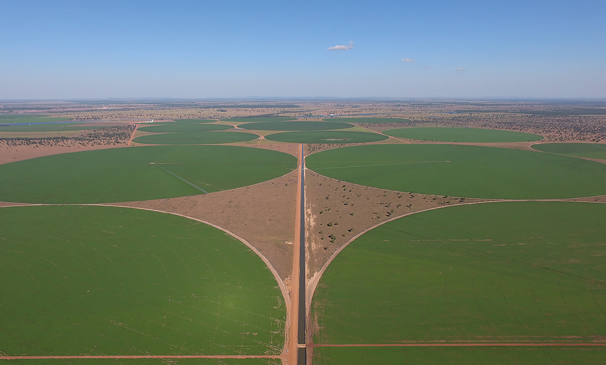

Unidade 9 - Circunferência e círculo

Pivô central de irrigação. Jussara, GO, 2017.
Dema/Polícia Civil/GO
211
Pivô central de irrigação. Aguaí, SP, 2016.
No Brasil, em grandes fazendas, é muito utilizado o sistema de irrigação da plantação por meio do pivô central. A grande aceitação do equipamento se deve a vários fatores, vejamos alguns deles:
►Necessidade mínima de mão de obra.
►Adapta-se a terrenos planos e ondulados.
►Também pode aplicar fertilizantes via água.
►Consegue irrigar de forma localizada, desde que as plantações sejam em círculos.
1. Para que esse sistema de irrigação possa ser utilizado, as plantações precisam ser feitas utilizando-se uma forma geométrica específica. Que forma é esta?
2. Anteriormente, estudamos circunferências e círculos. Quais são os elementos de uma circunferência?